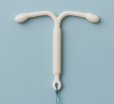

Aula 1
Contracepção e Gravidez na Adolescência
Objetivos de aprendizagem:
- Analisar os dados epidemiológicos da gravidez na adolescência no Brasil, identificando padrões, causas e implicações para a saúde pública.
- Compreender os principais riscos gestacionais enfrentados por adolescentes.
- Riscos gestacionais associados à gravidez na adolescência.
- Avaliar os dilemas éticos envolvidos no cuidado de gestantes adolescentes.
- Aplicar conhecimentos sobre métodos contraceptivos apropriados à adolescência.
-
Analisar os aspectos sociais, legais e de saúde envolvidos na gravidez resultante de violência sexual, especialmente em meninas menores de 14 anos.
Adolescência
Segundo a OMS, adolescência é o período entre 10 e 19 anos de idade (OMS, 2020).

"Considera-se criança, para os efeitos desta Lei, a pessoa até doze anos de idade incompletos, e adolescente aquela entre doze e dezoito anos de idade". (Eca. 1990 — Art.2º')
A adolescência pode ser subdividida em:
- Adolescência precoce – 10 – 14 anos.
-
Adolescência tardia – 15 -19 anos.
No Brasil, a população adolescente representa uma parcela significativa da sociedade, com mais de 29.477.323 de pessoas em 2024, com 15.080.205 (51,2%) do sexo masculino e 14.397.118 (48,8%) do sexo feminino.
> A importância de discutir a gravidez na adolescência
A gravidez na adolescência é um período marcado por intensas mudanças físicas, emocionais e sociais. Do ponto de vista da saúde, além da atenção integral e dos cuidados que estas transformações exigem, é fundamental construir estratégias que previnam a gravidez não intencional na adolescência.
Pesquisa Nacional de Saúde do Escolar(PeNSE)
A Pesquisa Nacional da Saúde do Escolar (PeNSE) coleta dados sobre hábitos de vida de estudantes brasileiros. Ela aborda temas como alimentação, atividade física, saúde mental, uso de substâncias e violência. Os resultados orientam políticas públicas voltadas à saúde dos adolescentes. A pesquisa é realizada pelo IBGE com apoio do Ministério da Saúde.
Em 2019, os dados da PeNSE indicaram que 35,4% dos escolares de 13 a 17 anos de idade já tiveram relação sexual alguma vez, o que representa uma redução de 2,1 p.p. em relação ao resultado de 2015. A prevalência de iniciação sexual em adolescentes tende a se elevar à medida que avança a idade. Entre os escolares de 13 a 15 anos, os resultados da PeNSE mostraram que 24,3% dos escolares nessa idade já tiveram relação sexual alguma vez, enquanto no grupo etário de 16 a 17 anos o percentual mais que dobrou (55,8%).
Clique aqui e saiba mais sobre sobre o PeNSE, veja o documento na íntegra.
Saúde reprodutiva da adolescente
Em relação à saúde reprodutiva de adolescentes, o número de partos, no Brasil, em 2023.
Um estudo mostrou que, entre os anos de 2011 – 2021, foram 127.022 nascidos vivos de meninas 10-14 anos, na maioria negras, 21,1% em união estável ou casadas, com menor proporção de 7 consultas de pré-natal e captação no primeiro trimestre, maior proporção de baixo peso ao nascer e baixo índice de Apgar, residentes nas regiões Norte e Nordeste.
Em sua unidade de saúde, já houve algum caso de gravidez em meninas nessa idade? Como a sua equipe trabalhou com esta situação?
A gravidez na adolescência está associada a maiores riscos de complicações para a mãe e o bebê
A gravidez na adolescência está associada a maiores riscos de complicações para a mãe e o bebê. No Brasil, o Ministério da Saúde classifica a gravidez na adolescência (< 15 anos) como uma gestação de risco intermediário.
Gestações de risco intermediário podem ser acompanhadas na Atenção Primária à Saúde com apoio de equipe multiprofissional ou com apoio de ambulatório pré-natal de alto risco. São gestantes que precisam de cuidados especiais.
Você sabe quais as complicações mais frequentes entre gestantes adolescentes? É importante saber, para que você (ACS) e sua equipe estejam atentos. Veja no quadro abaixo:
| Risco de morte da gestante e do recém-nascido, devido às complicações seguintes | Repercussões psicossociais da gestação |
|---|---|
|
|
Todos os aspectos, tanto biológicos quanto psicossociais, levam ao risco de repetição dos padrões de pobreza e exclusão social e ao aumento da mortalidade materna e infantil, pelos riscos de complicações durante a gravidez e o parto.
Entenda quais os fatores que contribuem para a ocorrência da gravidez na adolescência:
- Início de atividade sexual em anos iniciais da adolescência;
- Dificuldades de acesso à informação qualificada sobre saúde sexual e saúde reprodutiva;
- Dificuldade de acesso a métodos contraceptivos;
- Influência de fatores socioeconômicos, como pobreza, baixa escolaridade e desigualdade de gênero;
- Fatores socioculturais, relacionados à sexualização precoce, sobretudo de meninas;
-
Questões relacionadas à violência sexual e ao casamento infantil.

Você sabia?
Segundo dados do Anuário Brasileiro de Segurança Pública, o Brasil é o sexto país do mundo em número de casamento infantil, denotando que esta é uma prática naturalizada de violência contra crianças e adolescentes.
Prevenção da Gravidez na Adolescência
A Semana Nacional de Prevenção da Gravidez na Adolescência foi instituída pela Lei nº 13.798/19. O objetivo dessa Semana é promover a discussão do tema e:
- Reconhecer o (a) adolescente como sujeito de direitos;
- Assegurar os direitos sexuais e direitos reprodutivos de adolescentes;
- Fortalecer competências dos profissionais da educação e da saúde sobre a educação integral em sexualidade;
- Dialogar com a sociedade sobre a importância dos projetos de vida na adolescência;
- Informar sobre as Infecções Sexuais Transmissíveis (IST) e a importância da dupla proteção;
-
Informar sobre os vários tipos de métodos contraceptivos disponíveis no SUS.
Clique aqui e saiba mais sobre a Lei nº 13.798/2019 que instituiu a Semana Nacional de Prevenção da Gravidez na Adolescência.
Em 2025, o Ministério da Saúde publicou uma Nota Técnica contendo recomendações sobre Saúde Sexual e Reprodutiva de Adolescentes, incluindo orientações sobre métodos contraceptivos na adolescência e atendimento à adolescente grávida.
Boas práticas da atenção integral às/aos adolescentes no âmbito da saúde sexual e saúde reprodutiva
Boas práticas na atenção integral à saúde sexual e reprodutiva de adolescentes envolvem acolhimento, educação em saúde, acesso facilitado a métodos contraceptivos e ações intersetoriais, com foco na prevenção de ISTs/HIV/Aids, gravidez não intencional e promoção da saúde mental. A atenção integral à saúde sexual e reprodutiva de adolescentes deve ser um processo contínuo e abrangente, envolvendo diversos aspectos.
Realizar busca ativa no território, identificando os/as adolescentes em situação de vulnerabilidade, para promoção de acolhimento e oferta de cuidado individualizado, de acordo com suas necessidades e demandas de saúde, com ênfase na saúde sexual e na saúde reprodutiva.
Adolescentes são prioritários na garantia de seus direitos e devem ter seu acesso à APS em qualquer circunstância.
Identificar os riscos para a gravidez não intencional no contexto familiar e psicossocial por meio de visitas domiciliares pelos Agentes Comunitários de Saúde (ACS) e Profissionais da Estratégia Saúde da Família (ESF).
Incluir as (os) adolescentes nas discussões e planejamento de ações de saúde, tendo as atividades coletivas de educação em saúde e o Programa Saúde na Escola (PSE) como ferramentas efetivas.
Promover um atendimento acolhedor, considerando as questões éticas e legais.
É necessário que a (o) profissional de saúde esteja atenta (o) à ocorrência de violência sexual, tanto nos casos em que mandatoriamente o estupro de vulnerável está definido, quanto na atenção às demais faixas etárias, quando o consentimento à relação sexual deve ser identificado para assegurar que se trata de uma relação sexual consentida e livre de violências.
> Disponibilização de métodos contraceptivos e testes rápidos
A APS deve proporcionar consulta informada e esclarecida com médica(o) ou enfermeira(o), com apoio da Equipe Multi, quando possível, para a prevenção de IST e a escolha do método contraceptivo de maneira compartilhada entre a (o) adolescente e sua parceria.
A equipe de saúde deve eliminar barreiras de acesso impostas sem fundamentação técnica, como:
- Exigência de comprovante de residência nas localidades do serviço.
- Enscrição em programas.
-
Exigência de presença do responsável legal.
A contracepção de emergência, também conhecida como “pílula do dia seguinte”, é um método contraceptivo usado para evitar a gravidez após uma relação sexual desprotegida. Pode ser utilizada em casos de falha do método contraceptivo usual, como rompimento do preservativo, esquecimento da pílula anticoncepcional ou agressão sexual.

Atenção!
A contracepção de emergência deve ser administrada em até 120 horas (5 dias) após a relação sexual desprotegida ou a violência sexual, sendo ideal que ocorra no menor intervalo possível para aumentar a eficácia.
As opções disponíveis no Sistema Único de Saúde são:
Pílula isolada de Levonorgestrel 1,5mg, dose única.
Dispositivo Intrauterino de Cobre (DIU TCu).
O profissional de saúde deve ofertar todos os métodos disponíveis no SUS, com adequada educação em saúde acerca de seu mecanismo de ação, tempo de duração, forma correta do uso, eventos adversos possíveis, sinais de alarme e decisão pela cessação do uso a qualquer tempo.
- A prescrição de métodos anticoncepcionais para adolescentes menores de 14 anos, quando realizada em conformidade com os critérios clínicos de elegibilidade, não configura ato ilícito.
- Em caso de dúvida sobre gestação, deve-se ofertar Teste Rápido de Gravidez.
-
Lembrar de incluir os adolescentes e jovens do gênero masculino na responsabilização pelo uso do preservativo como método contraceptivo e para a prevenção das IST.
> Métodos contraceptivos reversíveis de longa ação
Os métodos contraceptivos reversíveis de longa duração (LARC), como o DIU e o implante, são métodos altamente eficazes que duram vários anos e não exigem uso diário. Eles são uma opção popular para quem busca contracepção eficaz e conveniente.
Alguns profissionais de saúde, ainda hoje, acreditam que estes métodos não podem ser utilizados em adolescentes. Mas isso não é verdade. Evidências atuais indicam que são métodos muito seguros e eficientes para uso em adolescentes.
| Método | O que é isso | Eficácia | Duração | Proteção para IST | Prós | Contras |
|---|---|---|---|---|---|---|
DIU TCu |
Dispositivo em forma de T que contém cobre e que é colocado dentro do útero por profissional de saúde |
99% |
5–10 anos |
Não |
Elevado nível de eficácia |
Pode causar cólicas ou sangramentos mais intensos |
Implante contraceptivo |
Bastão pequeno de silicone que libera hormônios, colocado sob a pele por profissional da área de saúde |
99% |
Até 3 anos |
Não |
Elevado nível de eficácia |
Pode inicialmente causar alteração dos padrões de sangramento e pode ser sentido através da pele |
DIU Hormonal |
Dispositivo em forma de T, que libera hormônios, e que é colocado dentro do útero por profissional de saúde |
99% |
Até 8 anos |
Não |
Elevado nível de eficácia |
Pode inicialmente causar alteração dos padrões de sangramento |
Prevenção combinada (preservativo associado a outro método contraceptivo eficaz): É fundamental orientar adolescentes sobre a importância da prevenção combinada, utilizando preservativos internos ou externos para a prevenção de IST e gestação, além de outro método contraceptivo para a prevenção da gravidez, promovendo assim a saúde sexual e saúde reprodutiva de forma integral.
Princípios éticos no atendimento de adolescentes
A atenção à saúde de adolescentes envolve questões éticas. Por isso, deve ser norteada por princípios como promoção da autonomia, respeito à privacidade, sigilo e confidencialidade, além da garantia de atendimento integral e seguro.
Autonomia do adolescente deve sempre ser estimulada e respeitada, compreendendo-se a essência deste princípio bioético enquanto passível de exercício a partir da oferta adequada de informações cientificamente embasadas e com fundamentação técnica pelos organismos de saúde, com vistas à promoção do autocuidado.
Deve-se assegurar o atendimento de adolescentes nos serviços de saúde, mesmo quando desacompanhados.
Refere-se ao direito do indivíduo de ter suas informações pessoais e de saúde protegidas e mantidas em segurança, sem exposição indevida. Isso significa que qualquer dado relacionado à saúde, histórico, diagnósticos e tratamentos.
É importante a confidencialidade e sigilo das informações compartilhadas pelas (os) adolescentes durante o atendimento, exceto em situações de risco à vida ou à integridade física ou psicológica da (o) adolescente e/ou de terceiros, quando a quebra do sigilo se faz necessária para a sua proteção.
Confirmado o diagnóstico de gravidez, como acolher a adolescente grávida
Diante da confirmação de uma gravidez na adolescência, é fundamental que os profissionais de saúde ofereçam um acolhimento humanizado, respeitoso e orientado pelas legislações vigentes. O atendimento deve considerar o desejo da adolescente em relação à continuidade da gestação, bem como o contexto em que ocorreu a gravidez — se consensual ou resultante de violência. A seguir, apresenta-se uma tabela com diretrizes para o acolhimento adequado, com base no resultado positivo do teste de gravidez:
| Deseja a gravidez | Não deseja a gravidez | |
|---|---|---|
|
Situação 1: gravidez ocorrida acidentalmente em relação consensual.
|
Situação 2: em caso de violência sexual, assim como na condição de “vulnerável” (menor de 14 anos).
|
O que é importante saber, em caso de violência suspeita ou confirmada?
O profissional deve estar atento à possibilidade de violência. É importante criar um ambiente acolhedor para que a gestante se sinta confiante para falar da sua história, sem medo de ser julgada. Se a gestante sinalizar que sua gestação foi decorrente de estupro, está indicada uma avaliação de equipe multiprofissional.
Nestes casos, a gestante deve ser informada sobre as opções disponíveis: interrupção da gravidez, ou entrega do bebê para doação legal, após o nascimento. A interrupção da gravidez está prevista em três situações:
- Violência sexual.
- Anencefalia.
-
Risco de vida para a mulher.
Meninas com idade entre 10-14 anos constituem um grupo muito especial. Qualquer gestação nessa faixa etária é definida pela lei como gestação decorrente de estupro de vulnerável. Isto é, mesmo que a menina tenha tido relação sexual consentida, presume-se que houve violência. Estes casos devem ser notificados ao SINAN, na Ficha Individual de Notificação de Violência Interpessoal e autoprovocada.
Atenção!
Em casos de violência, além da notificação compulsória, deve-se realizar a comunicação externa ao conselho tutelar e especificar, também na ficha de notificação, em campo designado, encaminhamento intra e intersetorial, bem como acionar a rede de atenção e proteção integral.
Isso é o que diz a lei. Todavia, existem situações especiais, como é o caso de mulheres indígenas. Nestas comunidades, a relação sexual e a gravidez em meninas menores de 14 anos em geral não é entendida como violência. A notificação, por outro lado, pode ser entendida como uma violência cometida pela equipe de saúde. Nestes casos, vale a pena entrar em contato com a Fundação Nacional dos Povos Indígenas - FUNAI, Secretaria Especial de Saúde Indígena - SESAI, ou outras organizações que representam a comunidade indígena.
Pré-natal de gestante adolescente
É fundamental promover a vinculação precoce da adolescente grávida com os serviços de saúde ainda no primeiro trimestre de gestação. Esse acompanhamento inicial contribui para o estabelecimento de uma relação de confiança, facilita o acesso a informações e cuidados adequados, e permite o monitoramento contínuo da gestação.
As adolescentes devem ser reconhecidas como sujeitos de direitos. Por isso, precisam ser devidamente orientadas e ter suas dúvidas esclarecidas — relacionadas ou não ao pré-natal, ao parto, ao puerpério e às demais ações de saúde em curso. O cuidado deve ser integral e respeitoso, considerando suas especificidades e contextos de vida.
Ampliar a vinculação precoce das adolescentes grávidas ainda no 1º trimestre.
Lembrar que as(os) adolescentes, como sujeitos de direito, podem e devem ser esclarecidas(os) em todas as suas dúvidas relacionadas ou não ao pré-natal, parto e puerpério e a todas as ações de saúde em curso.
A participação do pai adolescente também deve ser incentivada e garantida em todas as ações cabíveis durante o pré-natal, o parto e o puerpério da parceira. Envolver o companheiro contribui para o fortalecimento dos vínculos familiares e para a corresponsabilidade no cuidado com a gestante e o bebê.
Por fim, é essencial que as equipes de saúde identifiquem, no território, todas as adolescentes grávidas, com especial atenção àquelas em situação de maior vulnerabilidade — como as que vivem em situação de rua, estão em conflito com a lei, fazem uso de álcool ou outras drogas, ou pertencem a comunidades indígenas, quilombolas ou ribeirinhas. Essas adolescentes devem ser acolhidas com escuta qualificada e receber cuidados diferenciados, de acordo com suas necessidades e demandas específicas de saúde.
O pré-natal deve ser uma oportunidade para discutir e orientar sobre os riscos para as doenças sexualmente transmissíveis, o que poderá contribuir para o discernimento e a consciência de situações pouco refletidas na vida e que podem ajudar a adolescente gestante a entender certas dificuldades e melhor lidar com elas.
A unidade de saúde deve articular ações intersetoriais que assegurem e garantam os direitos das adolescentes, como:
- O direito a continuar os estudos em regime diferenciado.
-
Apoio social para os futuros pais e mães adolescentes, favorecendo o seu direito ao aporte da rede de proteção social.
Finalizamos esta aula com a certeza de que a prevenção da gravidez na adolescência exige informação, acolhimento e responsabilidade compartilhada.
O papel dos profissionais de saúde, especialmente dos Agentes Comunitários, é essencial na escuta ativa e no cuidado integral. Proteger adolescentes é garantir que tenham escolhas conscientes, seguras e respeitadas.
Atividade
Em relação à contracepção na adolescência, assinale a alternativa correta: